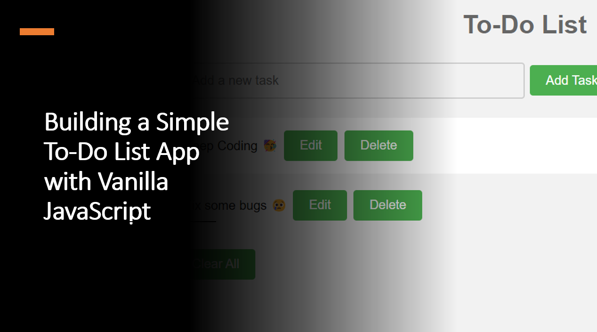

Introduction​
Creating a to-do list app is a great way to practice your JavaScript skills and build a useful application. In this blog article, we will learn how to build a simple to-do list app with vanilla JavaScript.
Suggested Tutorials 📑:​
Let's get started! 🚀
1. HTML Structure​
Let's start by creating the HTML structure for our to-do list app.
Start by setting up the basic HTML structure for your to-do list app. Create an input field for adding tasks, an unordered list (<ul>) to display tasks, and a "Clear All" button to remove all tasks.
<!DOCTYPE html>
<html>
<head>
<title>To-Do List App</title>
</head>
<body>
<h1>To-Do List</h1>
<input type="text" id="taskInput" placeholder="Add a new task">
<button id="addTaskButton">Add Task</button>
<ul id="taskList"></ul>
<button id="clearAllButton">Clear All</button>
<script src="app.js"></script>
</body>
</html>
2. CSS Styling​
Next, let's add some CSS styling to our to-do list app.
body {
font-family: Arial, Helvetica, sans-serif;
background-color: #f2f2f2;
}
h1 {
text-align: center;
color: #666666;
}
input[type=text] {
width: 50%;
padding: 12px 20px;
margin: 8px 0;
box-sizing: border-box;
border: 2px solid #ccc;
border-radius: 4px;
background-color: #f2f2f2;
font-size: 16px;
}
input[type=text]:focus {
border: 3px solid #555;
}
button {
background-color: #4CAF50;
border: none;
color: white;
padding: 10px 20px;
text-align: center;
text-decoration: none;
display: inline-block;
font-size: 16px;
margin: 4px 2px;
cursor: pointer;
border-radius: 4px;
}
button:hover {
opacity: 0.8;
}
#taskList {
list-style-type: none;
padding: 0;
}
#taskList li {
background-color: #ffffff;
padding: 12px;
margin-bottom: 5px;
border-radius: 4px;
}
#taskList li:nth-child(even) {
background-color: #f2f2f2;
}
#taskList li:hover {
background-color: #ddd;
cursor: pointer;
}
#taskList li.checked {
background-color: #888888;
color: #ffffff;
text-decoration: line-through;
}
#taskList li.checked:hover {
background-color: #555555;
}
Suggested Tutorials 📑:​
3. JavaScript Logic​
Now that we have the HTML and CSS in place, let's add the JavaScript logic to our to-do list app.
const taskInput = document.getElementById('taskInput');
const addTaskButton = document.getElementById('addTaskButton');
const taskList = document.getElementById('taskList');
const clearAllButton = document.getElementById('clearAllButton');
function addTask() {
const taskText = taskInput.value;
if (taskText.trim() === '') return;
const taskItem = document.createElement('li');
taskItem.innerHTML = `
<span>${taskText}</span>
<button class="editButton">Edit</button>
<button class="deleteButton">Delete</button>
`;
taskList.appendChild(taskItem);
taskInput.value = '';
}
function editTask(taskItem) {
const newText = prompt('Edit task:', taskItem.firstChild.textContent);
if (newText !== null) {
taskItem.firstChild.textContent = newText;
}
}
function deleteTask(taskItem) {
taskList.removeChild(taskItem);
}
addTaskButton.addEventListener('click', addTask);
taskList.addEventListener('click', (event) => {
const target = event.target;
const taskItem = target.parentNode;
if (target.classList.contains('editButton')) {
editTask(taskItem);
} else if (target.classList.contains('deleteButton')) {
deleteTask(taskItem);
}
});
clearAllButton.addEventListener('click', () => {
taskList.innerHTML = '';
});
Suggested Tutorials 📑:​
Conclusion​
Congratulations! 🥳 You've successfully built a simple to-do list app using vanilla JavaScript.
You learned how to add tasks, edit tasks, delete tasks. This project demonstrates fundamental concepts in web development, such as DOM manipulation, event handling, and data persistence.
We hope you enjoyed this blog article.
Happy coding! 🎉